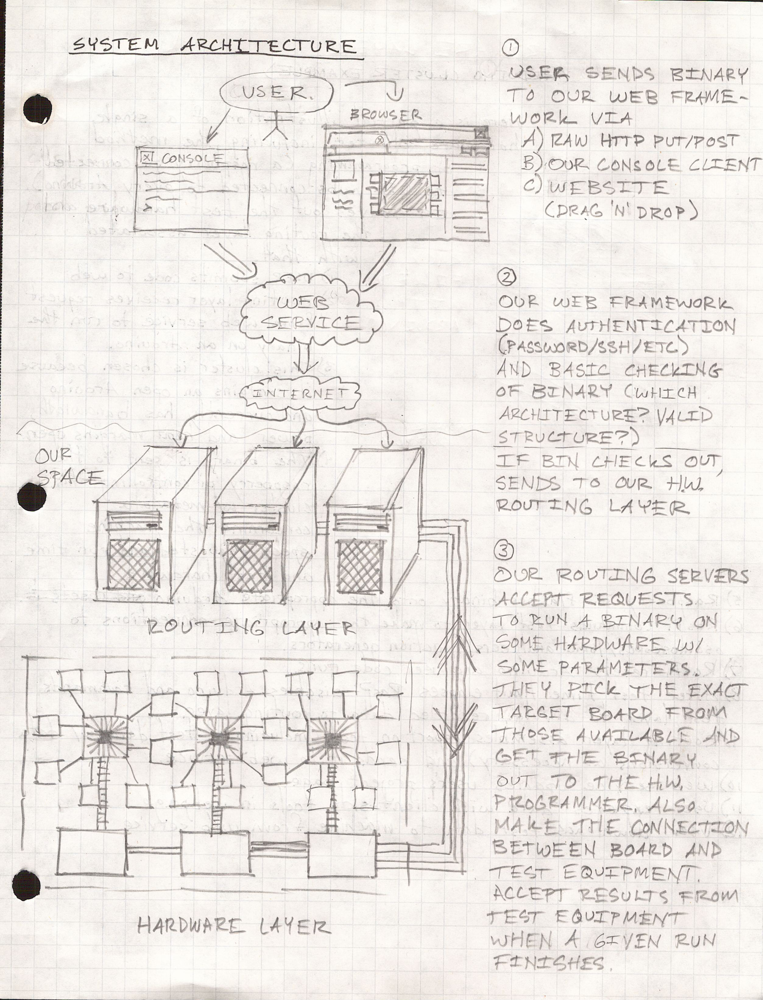
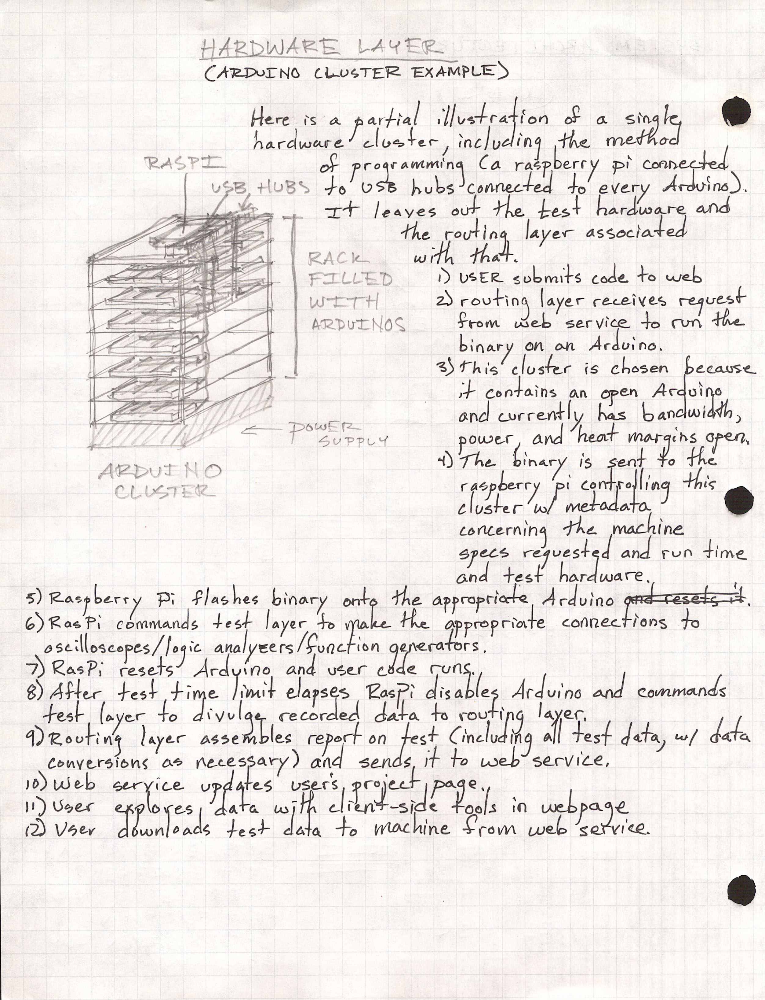
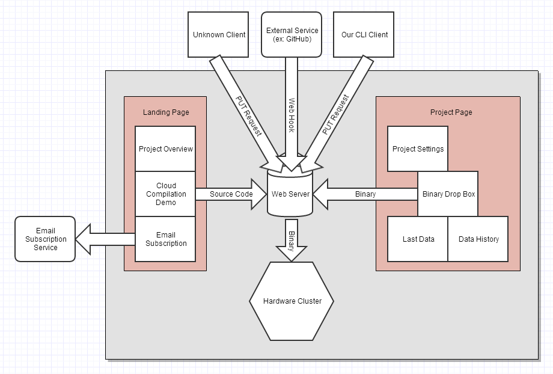

I was thinking about what it would take to build a web service that would provide virtualized prototyping hardware over the Internet. So you could log into a website and write some code that would connect real hardware, like an Arduino and LEDs, in arbitrary configurations. It would let you deploy code to the microcontrollers you selected and have sensors like cameras to read the behavior of the configured & programmed system.
I was thinking it would be useful for evaluating microcontrollers and complex ICs. Cheaper to have eval hardware in one place and make it available for a small fee over the network than for everyone who wants to try some device needing to buy it and have it shipped to them. Also useful for education to be able to show how a particular digital electronics system works and then let the student play with it over the WWW.
But there are a lot of obvious difficult problems with the idea. It would be very hard to scale to different chips, and fairly expensive. The test gear needed to observe the behavior of the finished digital systems would get very expensive for high frequency signals, and multiple instances of each would be needed to have enough availability for users.
Doing something like this also involves many interesting solvable problems. Reconfigurable digital logic exists in the form of FPGAs , and those could be used as the programmable wires between most types of digital systems. Depending on the speeds of the signals being connected there would be constraints on the allowable routing distances between cells. There would be a complex optimization problem to solve in designing the hardware modules that would actually contain the systems being wired up so that they could balance maximization of flexible wiring and minimization of the impact of signal route distance.


Thought over during undergrad